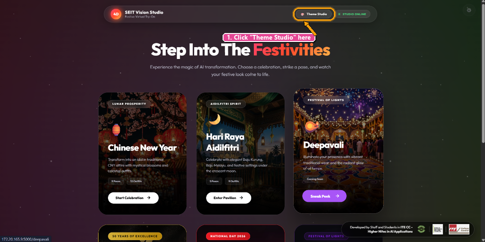
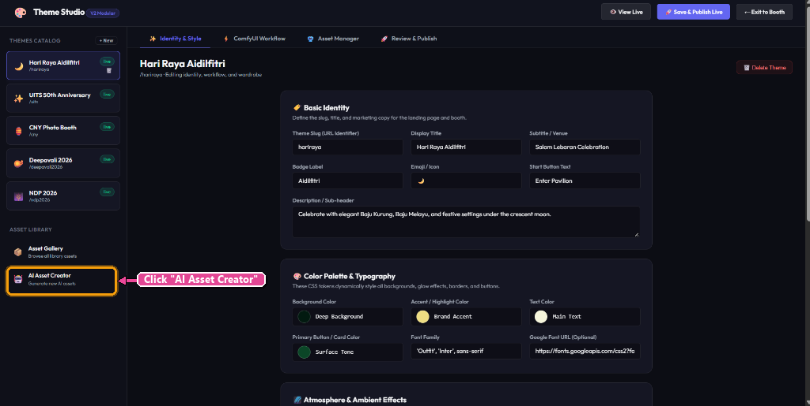
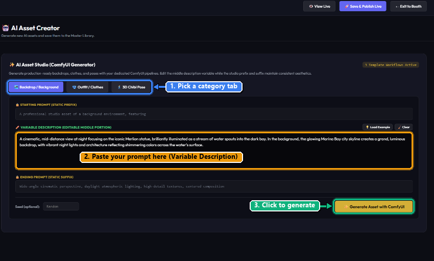
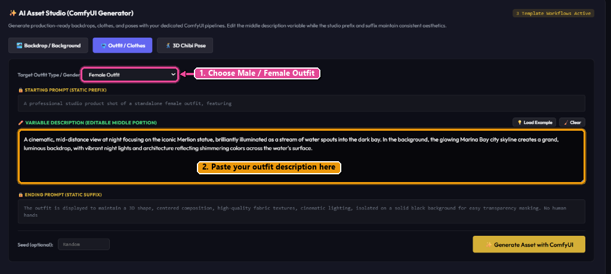
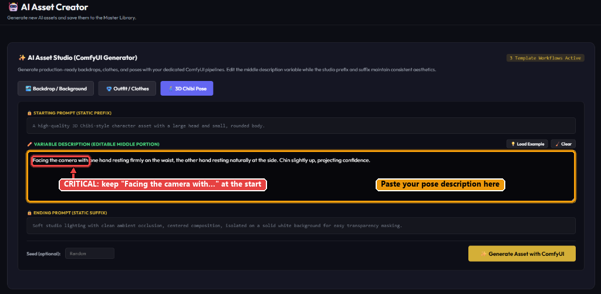
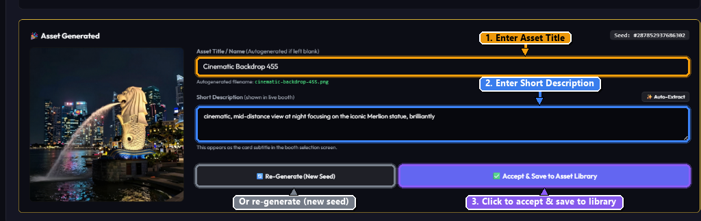
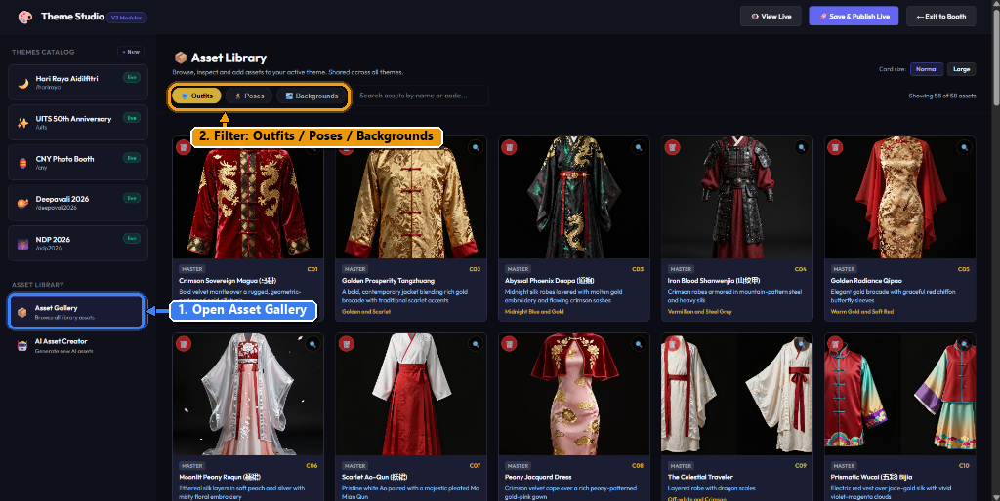
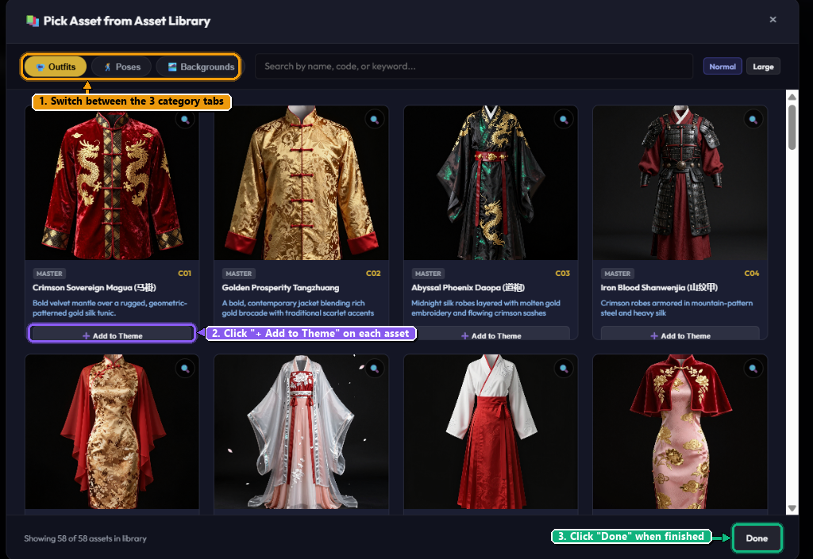

Asset Creator Step-by-Step Video Guide
Watch the complete video demonstration above to see AI backdrop, outfit, and pose generation saved directly to the Master Library.
From ChatGPT Prompt to Live Virtual Try-On
Follow this beginner-friendly roadmap. You will generate custom backdrops, festive garments, and 3D chibi poses, save them to the Master Asset Library, link them to your celebration theme (e.g. Deepavali), and publish the live photo booth!
Enter the Theme Studio
Launch the studio dashboard from the main SEIT Vision Studio landing page.
Locate the top navigation bar
When you first land on the home page, look at the top navigation bar next to the green STUDIO ONLINE badge.
Click on "Theme Studio"
Click the pill button with the palette icon labeled Theme Studio. This switches the application into administrative & creator mode.

Navigate to AI Asset Creator
Head to the dedicated asset generation studio in the left sidebar.
Once inside Theme Studio, the screen displays theme configurations, but where you actually want to go to make new items is the AI Asset Creator.
Scroll down the left sidebar
Under the THEMES CATALOG list, find the section titled ASSET LIBRARY.
Click "AI Asset Creator"
Click on AI Asset Creator (robot icon 🤖). Here, you will find built-in example prompts for every asset category to input into your Gen AI tool!

Choose Asset Category & Understand Prompt Architecture
Discover how ComfyUI structures prompts and how each asset category behaves.
The studio uses a 3-part prompt formula to guarantee that assets match production standards without you having to configure ComfyUI node workflows:
Locked studio standards that define asset framing, lighting setup, and isolation requirements.
The ONLY part you edit! This is where you paste the description generated from ChatGPT.
Locked technical keywords ensuring solid backdrops for transparent masking and cinematic textures.
The 3 Asset Categories
Generates high-resolution background environments (e.g. Marina Bay Sands at night, Deepavali lamp-lit pavilion, Chinese New Year flower market).

Generates standalone festive garments isolated on black background for clean virtual try-on masking.
Select Gender via Dropdown Bar:
You must select the dropdown bar labeled Target Outfit Type / Gender to choose between Male Outfit and Female Outfit. This switches the prefix to match male or female clothing cut!

Generates 3D chibi-style avatar poses on solid white background for character generation.
🚨 Do NOT cut off "Face the camera with"!
When asking ChatGPT or any Gen AI to create a pose, you must explicitly instruct it NOT to remove or cut off the phrase "Facing the camera with" (or "Face the camera with"). The AI needs this exact phrasing to generate the character facing forward toward the kiosk camera!

How to Use ChatGPT to Generate Your Prompts
Copy our exact ChatGPT prompt recipe to get perfect descriptions, titles, and summaries in seconds.
Open ChatGPT (or Claude / Gemini). To get the best results, you need to provide an example prompt to teach the AI the writing style, and ask it for three specific things:
1. Prompt Description
The vivid visual description to paste into the platform's variable box.
2. Asset Title
Catchy 2-4 word title (e.g. "Marina Bay Night Waters").
3. Short Description
1-sentence summary displayed in the theme selector kiosk.
Act as a creative prompt designer. Generate 3 descriptive prompts for Deepavali (Diwali) festival locations, inspired by the following sample format and add a bit of people: Sample Reference: "A cinematic, mid-distance view at night focusing on the iconic Merlion statue, brilliantly illuminated as a stream of water spouts into the dark bay. In the background, the glowing Marina Bay city skyline creates a grand, luminous backdrop, with vibrant night lights and architecture reflecting shimmering colors across the water's surface." Requirements: 1. Subject & Theme: Focus strictly on iconic festive locations, streetscapes, architecture, light installations, or sacred outdoor/indoor spaces decorated for Deepavali. 2. People & Atmosphere: Include a bit of people in the background (such as soft-focus festival celebrants, distant silhouettes enjoying the lights, or families admiring rangoli) to add lively cultural warmth, scale, and ambiance, while keeping the main central foreground open for the photo booth subject. (Note: If you prefer empty streetscapes, specify 'No People'). 3. Format per item: - A bolded, evocative Title. - Prompt: A detailed, sensory-rich paragraph specifying camera angle/framing (e.g., wide shot, low-angle, vanishing perspective), lighting conditions (dusk, night, warm amber uplighting, micro-LED glow), key cultural decor (diyas, rangoli, arches, marigolds), and environmental atmosphere (festive streets, damp pavements, incense haze, soft distant crowd). - Description: A concise 1-sentence summary highlighting the core mood, setting, and visual appeal. 4. Output: Text prompts only (do not generate actual images).
help me generate a detailed festive outfit prompt for Deepavali traditional wear (female or male). Requirements: - Describe the garment details (embroidery, fabric textures, colors, drape, traditional festive ornaments). - Keep it focused only on the standalone outfit garment. Please provide: 1. Asset Title (e.g. "Royal Maroon Silk Sherwani" or "Golden Zari Silk Saree") 2. Short Description (1 concise sentence) 3. Variable Description (the detailed description of the outfit to be generated)
help me generate a 3D chibi avatar pose for our photo booth studio. IMPORTANT CONSTRAINT: You MUST explicitly start the pose description with: "Facing the camera with [pose details]" Do NOT cut off or remove "Facing the camera with", because the kiosk try-on system strictly requires front-facing alignment. Here is the example reference: "Facing the camera with one hand resting firmly on the waist, the other hand resting naturally at the side. Chin slightly up, projecting confidence." Please provide: 1. Asset Title (e.g. "Confident Waist Pose" or "Festive Namaste Greeting") 2. Short Description (1 sentence describing the posture) 3. Variable Description (starting strictly with "Facing the camera with...")
Generate with ComfyUI, Review, & Save to Asset Library
Put your prompt to work in the studio and save the final asset to the library.
Paste your Variable Description
Click into the VARIABLE DESCRIPTION box and paste your ChatGPT prompt. If doing outfits, verify the gender dropdown.
Click "✨ Generate Asset with ComfyUI"
Wait a few seconds while ComfyUI processes the neural network nodes and outputs the high-res render.
Fill in Asset Title & Short Description
Type your custom Asset Title / Name (e.g. "Cinematic Backdrop 455" or "Marina Bay Waters") and the Short Description (or click the ✨ Auto-Extract button).
Accept or Re-Generate
Click the purple button ✅ Accept & Save to Asset Library. If you want a fresh variation, click 🔄 Re-Generate (New Seed).

Inspect Your Assets in the Asset Gallery
View all your saved backgrounds, traditional garments, and poses in the Master Library.
Once you click Accept & Save to Asset Library, your item is stored into the centralized **Master Library**.
Click "Asset Gallery" in left sidebar
Under the ASSET LIBRARY menu on the left, click Asset Gallery.
Filter by category tabs
Toggle between Outfits, Poses, and Backgrounds to inspect your newly added items.

Add Your Assets to the Theme (e.g. Deepavali)
Navigate to your desired theme, open Asset Manager, and pick items from the gallery.
Select your target theme in the left sidebar
Under THEMES CATALOG on the left, click on the theme you want to update (for example: Deepavali 2026).
Click on the "Asset Manager" tab
In the top horizontal tabs of the theme editor, click Asset Manager.
Click "Pick from Asset Gallery"
This opens the modal dialog titled "Pick Asset from Asset Library".
Navigate the 3 tabs & click "+ Add to Theme"
Navigate across Outfits, Poses, and Backgrounds. Click the purple + Add to Theme button on every asset you want included in this celebration! Once done, click Done at the bottom right.

Save, Publish & View Live
Lock in your changes and launch the live interactive photo booth kiosk.
Press "🚀 Save & Publish Live"
In the top right corner of the Theme Studio header bar, click the glowing purple button labeled Save & Publish Live. This writes your theme configurations and links the new assets to the live kiosk production database!
Click "👁️ View Live"
Right next to the publish button, click View Live (or navigate back to the home page). Click on your celebration pavilion (e.g. Deepavali) to test out your new backdrops, virtual try-on clothes, and poses in real-time!